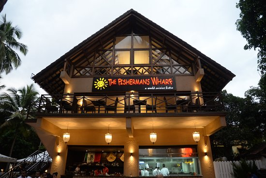
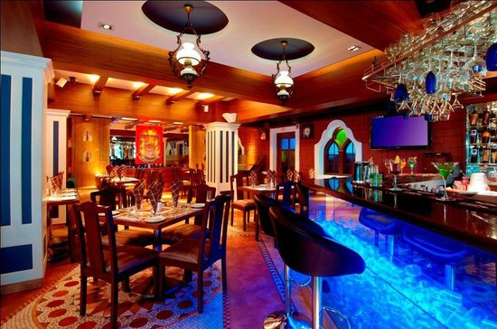
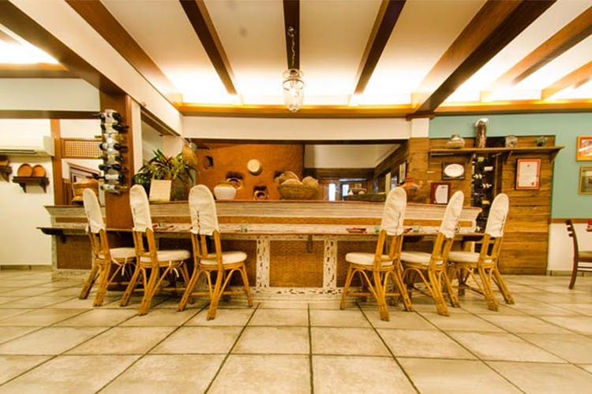

Restaurants

The Fisherman's Wharf
The Fisherman's Wharf in Goa offers a vibrant seaside dining experience with wide varieties including fresh seafood and lively ambience.
Location
Martin's Corner
Martin's Corner in Goa is renowned for its delicious seafood and vibrant atmosphere, making it a favorite among locals and tourists alike.
Location
Fat Fish Restaurant
Fat Fish Restaurant in Goa offers a delightful fusion of coastal flavors with a modern twist, ensuring a memorable dining experience by the sea.
Location

Kokni Kanteen
Kokni Kanteen in Goa is renowned for its delectable Goan cuisine with a twist of Kokani flavors, creating a unique culinary experience.
Location

Mum's Kitchen
"Mum's Kitchen in Goa offers a delectable journey through traditional Goan cuisine, celebrated for its authentic flavors and homely ambiance."
Location